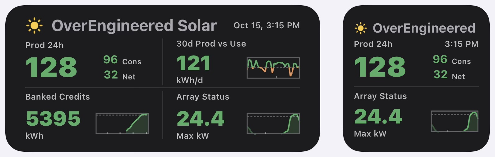

- iPhone Widgets
- iPhone Solar Widget for Enphase
iPhone Solar Widget for Enphase
iPhone Home Screen and Lock Screen widgets for Enphase solar systems: today's production, a banked-credit estimate, and fault and dirty-panel warnings. Free for personal use.

What it shows
- Prod 24h: production over the past 24 hours as the big number, with consumption and net beside it, in kWh. Green or orange against your 30-day average.
- 30d Prod vs Use: your average daily production over the past 30 days, with each day in a small chart against your average use.
- Banked credits: an estimate of your net-metering balance, starting from the figure on your last bill, with a small chart of the last 12 months.
- Array status: a chart of the last 24 hours, with yesterday’s part faded, your recent peak power, and a verdict: normal, dirty panels, low winter sun, or a service fault reported by Enphase.
It comes in a medium and a small Home Screen size, plus a Lock Screen widget. An optional Today view counts from midnight instead of the past 24 hours.
It is not live: it updates about once an hour while the sun is up, because Enphase's free plan limits how often it can ask. It reads your data from Enphase's cloud service, and it does not show battery status.
What you need
- An iPhone with the free Scriptable app.
- An Enphase system and the login you use in the Enphase app.
- A free Enphase developer account. The setup script walks you through creating one.
Everything runs on your phone, and your settings and keys stay there.
Install
Do this on your iPhone, in Safari.
- Install Scriptable from the App Store.
- On GitHub, tap the setup script, tap the ⋯ beside Code | Blame, then tap Copy under “Raw file content”. In Scriptable, tap +, paste, then tap Done. Press and hold the new script, tap Rename, and call it OverEngineered Solar Setup.
- Do the same with the widget script, and call it OverEngineered Solar.
- Run OverEngineered Solar Setup and follow its steps.
- Add a Scriptable widget to your Home Screen or Lock Screen, long-press it, choose Edit Widget, and pick OverEngineered Solar.
To update later, copy the new version and paste it over the old script. Your settings are kept.
The printable guide has every step with pictures. It is easier to follow with the guide printed or open on a second screen.
The files
For now the scripts are on GitHub. Tap the button, open each file, and copy it from there, as in the Install steps above.
- setup-overengineered-solar.js: the setup script. Run it once, and again to change a setting.
- widget-overengineered-solar.js: the widget itself.
- dev-sandbox-overengineered-solar.js: optional, previews the widget with made-up numbers.
1. Setup script
Run it once to connect to Enphase, and again any time you want to change a setting, such as a new banked-credit balance from your bill.
Loading…
Show the code, to copy by hand
2. Widget script
The widget itself. In the widget's settings, choose this script.
Loading…
Show the code, to copy by hand
Optional: preview sandbox
Previews how the widget looks using made-up numbers.
Loading…
Show the code, to copy by hand
Products and services used
- Scriptable, the free iPhone app that runs the scripts
- Enphase solar system, and Enphase's cloud service for your data
- Open-Meteo, for weather
- Zippopotam.us, for ZIP code lookup
More
- Project page on GitHub, for anyone who wants the full guide and history.
Licensed under the PolyForm Noncommercial License 1.0.0: personal and other noncommercial use is free. Not affiliated with or endorsed by Enphase Energy, Inc. Enphase is a registered trademark of Enphase Energy, Inc.